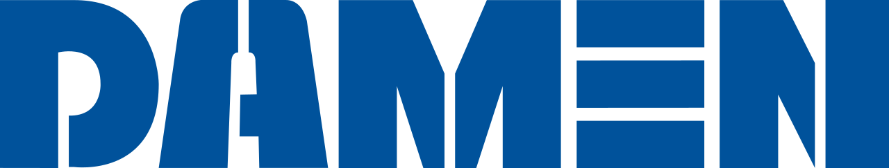

Core Buissness:Big data
Posities:Software Engineer, Technical Program Manager,Network Engineer, Data Scientist, UX Engineer, UX Interaction Designer.
Technologie:Artificial Intelligence, Computer Vision ,Natural Language ,Understanding Robotics, Quantum Computing, Machine Perception, Machine Learning, Cloud Computing
Voor: Google is een groot bedrijf met veel mogelijk heden Tegen: Omdat google een groot bedrijf is is het moeilijk om je te differentiëren.

Cisco
Core buisness:Switching and routing
Software Engineer
Technologie: Ethernetswitches, Communicatieproducten, IT beveiling, Datacenter-producten, Draadloze netwerkproducten, Software defined netwerken
Voor: Veel mogelijkheden Tegen
Damen
Core Buisness:
Posities:Terwijl er tientallen verschillende posities zijn kan je ze onderdelen in meerdere teams:Design & Proposal, Engineering – Shipbuilding, Engineering - Electrical & Automation,Engineering – Mechanical, Legal & Finance, General, Human Resources & Management, IT & IM ,Marketing & Sales, Production, Project Management, Repair & Services, Research & Development, Supply Chain
Technologie:Sleepboten, werkboten, patrouilleboten, vrachtschepen, baggervaartuigen, snelle veerboten, marineschepen en megajachten, Damen werkt ook aan VR om schepen voor het bouwen te kunnen controlen en kijken of alles goed ontworpen is.
Damen is een Nederlands bedrijf die dicht in de buurt zit, M.
Macaw
Core Buisness: Business Applications
Posities:Finacieel adminastrief medewerker, Recruitment Marketeer, Solution Consultant Security & Azure, Buisness Analist, Digital Marketing, Power Platform Consultant.
Technologie: Unit4, CRO-traject, Sitecore, CMS, Sharepoint, Dataverse, VBA, Power Platforms
Voor: Macaw is in Rotterdam gevestigd en dus best centraal gelegen. tegen:Ze nemen nauwelijks part-time mensen aan vooral full-time.

Syntess
Core Buisness: Het continu verbeteren van deze software en het ontwikkelen van nieuwe functionaliteit.
Positie: Product manager costumer succes, Support medewerker, Financial controller, Software developer team web apps, Frost-end developer
Technologie: Syntess werkt met ERP Software dat staat voor Enterprise Resource Planning dit bied ondersteunig voor alle processen in het bedrijf in plaats van meerdere softwarepakketen wat bij andere bedrijven plaatvindt.
Voor: In zeeland dus ik hoef niet uit de provincie verhuizen. tegen: